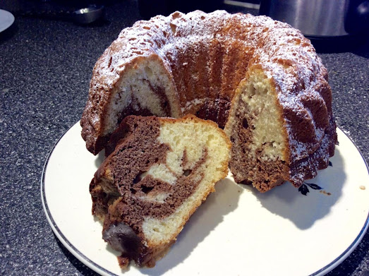

Marbled Gugelhupf Recipe
Home

Description
A Gugelhupf is a cake traditionally baked in a distinctive ring pan, similar to Bundt cake, but leavened with baker's yeast.
There are three main types: cocoa; plain with a hint of vanilla and lemon zest; and a marbled combination of the two.
It is especially popular as a traditional cake in Austria as well as the rest of Central Europe.
Ingredients
- 3 eggs, separated
- 1 3/4 cup powdered sugar (icing sugar)
- 1/2 cup butter, melted
- 1 tsp vanilla extract
- 2 cups all purpose flour
- 3 tsp baking powder
- 1/2 tsp salt
- 1/2 cup milk
- 2 Tbsp cocoa powder
- 1 Tbsp milk
- Powedered sugar for dusting as desired
Steps
- Preheat oven to 350F. Coat an 8 cup gugelhupf pan with nonstick cooking spray. (or use bundt pan)
- Beat egg whites in a medium bowl until soft peaks form. Set aside.
- In a larger bowl, with electric mixer, beat the sugar, butter, vanilla and egg yolks until smooth a creamy.
- Sift flour, baking powder and salt together and add half to egg yolk mixture, along with half the milk. Mix until combined and add remaining flour and milk, mixing again.
- Fold in egg whites until combined.
- Spoon half the batter into prepared pan. Mix cocoa and 2 tbls. milk until smooth. Add to remaining batter and mix until blended.
- Spoon into pan and using a knife, swirl white and chocolate batter together until marbeled.
- Bake 50-60 minutes, or until a wooden skewer inserted in center comes out clean. Remove from oven and turn pan onto wire rack to cool. Cake should release.
- Dust with powdered sugar to serve.